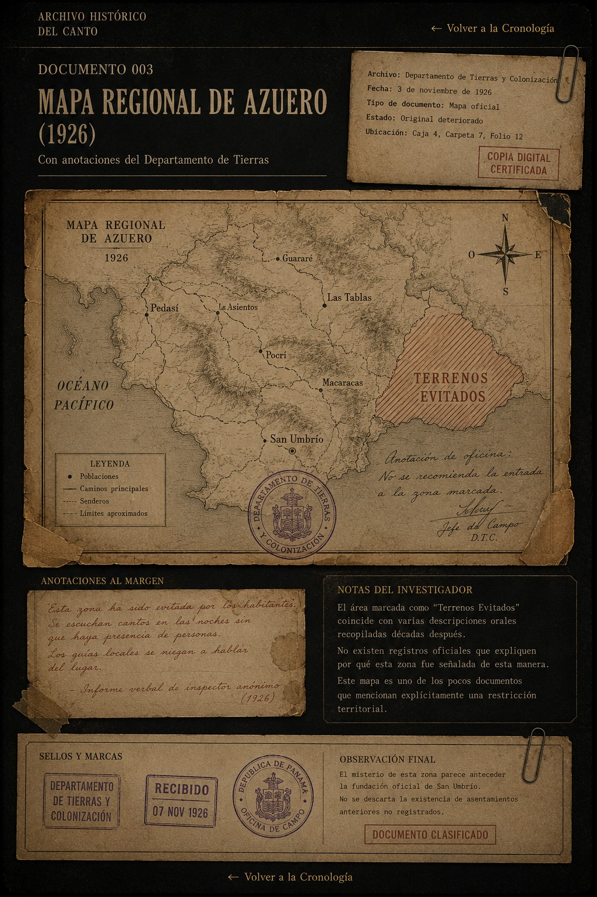

Este mapa constituye el primer documento oficial conocido donde aparece una zona delimitada bajo la expresión "Terrenos Evitados".
No existe ninguna explicación administrativa que justifique esta anotación. Tampoco aparecen decretos, resoluciones o restricciones legales asociadas a dicha área.
La marca fue dibujada directamente sobre el mapa original utilizando tinta distinta al resto del documento.
Este documento permaneció extraviado durante más de cuarenta años y fue localizado dentro de una caja sin clasificar. Presenta marcas de humedad y dobleces compatibles con almacenamiento prolongado.